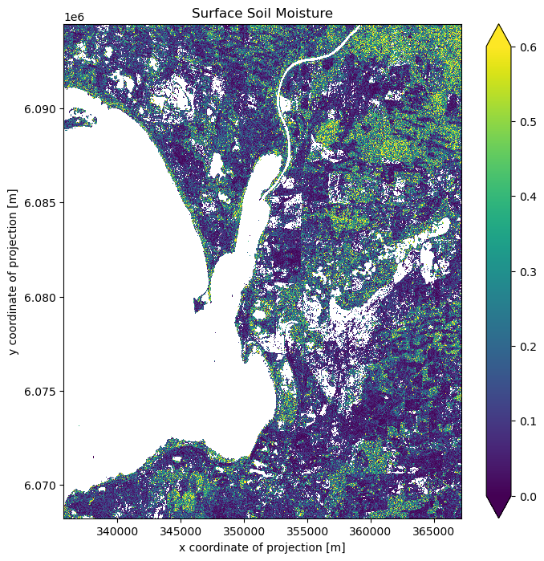

import openeo
import openeo.processes
connection = openeo.connect("openeo.dataspace.copernicus.eu").authenticate_oidc()Authenticated using refresh token.In this notebook, we follow the concept presented in https://custom-scripts.sentinel-hub.com/custom-scripts/sentinel-1/soil_moisture_estimation/ to estimate the soil moisture content using the concept of change detection over three year of time interval as a openEO workflow.
References: * https://eo4society.esa.int/projects/s1-for-surface-soil-moisture/ * https://www.sciencedirect.com/science/article/pii/S2352340921006296?via%3Dihub
Therefore the surface soil moisture is calculated using the following formula:
\[SSM=\frac{\sigma_0-dry_{ref }}{wet_{ref }-dry_{ref }}\]
where, \(\sigma_{0}\) = Current backscatter intensity
\(dry_{ref}\) = historic minimum backscatter in past 3 years
\(wet_{ref}\) = historic maximum backscatter in past 3 years
Authenticated using refresh token.Let us define the area of interest.
Let us start by creating a reference cube with a time interval of 3 years, followed by a datacube representing the current situation for approximately a month.
As we need maximum and minimum values for the reference period, we reduce the temporal dimension to derive spatially variable minimum and maximum values. For the current observation datacube, we select the most recent image, representing the latest available image available within the selected time period.
Furthermore, to filter wet and urban areas from our soil moisture dataset, we reduce the temporal dimension of our datacube by using a mean reducer to get an average reference datacube. This is followed by normalising the backscatter values by Log with base 10.
We create a mask to filter out values above -6dB (probably urban area) and below -17dB (probably water bodies), following the thresholds suggested in https://custom-scripts.sentinel-hub.com/custom-scripts/sentinel-1/soil_moisture_estimation/ .
This generates a final SSM datacube after applying urban and permanent water body mask.
0:00:00 Job 'j-24022621028b46459728273e37b8d71a': send 'start'
0:00:12 Job 'j-24022621028b46459728273e37b8d71a': created (progress N/A)
0:00:18 Job 'j-24022621028b46459728273e37b8d71a': created (progress N/A)
0:00:24 Job 'j-24022621028b46459728273e37b8d71a': created (progress N/A)
0:00:33 Job 'j-24022621028b46459728273e37b8d71a': created (progress N/A)
0:00:43 Job 'j-24022621028b46459728273e37b8d71a': created (progress N/A)
0:00:55 Job 'j-24022621028b46459728273e37b8d71a': created (progress N/A)
0:01:11 Job 'j-24022621028b46459728273e37b8d71a': created (progress N/A)
0:01:30 Job 'j-24022621028b46459728273e37b8d71a': created (progress N/A)
0:01:54 Job 'j-24022621028b46459728273e37b8d71a': created (progress N/A)
0:02:24 Job 'j-24022621028b46459728273e37b8d71a': created (progress N/A)
0:03:03 Job 'j-24022621028b46459728273e37b8d71a': created (progress N/A)
0:03:50 Job 'j-24022621028b46459728273e37b8d71a': created (progress N/A)
0:04:48 Job 'j-24022621028b46459728273e37b8d71a': created (progress N/A)
0:05:49 Job 'j-24022621028b46459728273e37b8d71a': created (progress N/A)
0:06:49 Job 'j-24022621028b46459728273e37b8d71a': created (progress N/A)
0:07:49 Job 'j-24022621028b46459728273e37b8d71a': created (progress N/A)
0:08:50 Job 'j-24022621028b46459728273e37b8d71a': finished (progress N/A)Text(0.5, 1.0, 'Surface Soil Moisture')
As suggested here, to avoid the effect of outliers, the soil moisture ranges from 0 to 0.6 is plotted. Here the white colour represents the masked-out area, including permanent water bodies and urban areas.